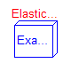
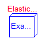

This package contains example models to demonstrate the usage of the Modelica.Mechanics.Rotational package. Open the models and simulate them according to the provided description in the models. The following demo models are present:
First First example using simple, basic elements
Friction Example to demonstrate usage of a clutch and a brake
CoupledClutches Example to demonstrate usage of 3 dynamically
coupled clutches.
LossyGearDemo1 Example to demonstrate that gear efficiency may lead to stuck motion
LossyGearDemo2 Example to show combination of LossyGear and BearingFriction
ElasticBearing Demonstration of bearing flange usage
Release Notes:
Copyright © 1999-2003, Modelica Association and DLR.
The Modelica package is free software; it can be redistributed and/or modified under the terms of the Modelica license, see the license conditions and the accompanying disclaimer in the documentation of package Modelica in file "Modelica/package.mo".
| Name | Description |
|---|---|
| First | First example: simple drive train |
| Friction | Drive train with clutch and brake |
| CoupledClutches | Drive train with 3 dynamically coupled clutches |
| LossyGearDemo1 | Example to show that gear efficiency may lead to stuck motion |
| LossyGearDemo2 | Example to show combination of LossyGear and BearingFriction |
| ElasticBearing | Example to show possible usage of bearing flange |
Modelica.Mechanics.Rotational.Examples.First

The drive train consists of a motor inertia which is driven by a sine-wave motor torque. Via a gearbox the rotational energy is transmitted to a load inertia. Elasticity in the gearbox is modeled by a spring element. A linear damper is used to model the damping in the gearbox bearing.
Note, that a force component (like the damper of this example) which is acting between a shaft and the housing has to be fixed in the housing on one side via component Fixed.
Simulate for 1 second and plot the following variables:
angular velocities of inertias inertia2 and 3: inertia2.w, inertia3.w
Release Notes:
| Name | Default | Description |
|---|---|---|
| amplitude | 10 | |
| freqHz | 5 | [Hz] |
| Jmotor | 0.1 | [kg.m2] |
| Jload | 2 | [kg.m2] |
| ratio | 10 | |
| damping | 10 |
encapsulated model First "First example: simple drive train"
import Modelica.Icons;
import Modelica.Blocks.Sources;
import Modelica.Mechanics.Rotational;
import SI = Modelica.SIunits;
extends Icons.Example;
parameter Real amplitude=10;
parameter SI.Frequency freqHz = 5;
parameter SI.Inertia Jmotor = 0.1;
parameter SI.Inertia Jload = 2;
parameter Real ratio=10;
parameter Real damping=10;
Rotational.Fixed fixed;
Rotational.Torque torque;
Rotational.Inertia inertia1(
J=Jmotor);
Rotational.IdealGear idealGear(
ratio=ratio);
Rotational.Inertia inertia2(
J=2,
phi(start=0),
w(start=0));
Rotational.Spring spring(
c=1.e4);
Rotational.Inertia inertia3(
J=Jload,
phi(start=0),
w(start=0));
Rotational.Damper damper(
d=damping);
Sources.Sine sine(
amplitude={amplitude}, freqHz={freqHz});
equation
connect(sine.outPort, torque.inPort);
connect(torque.flange_b, inertia1.flange_a);
connect(inertia1.flange_b, idealGear.flange_a);
connect(idealGear.flange_b, inertia2.flange_a);
connect(inertia2.flange_b, spring.flange_a);
connect(spring.flange_b, inertia3.flange_a);
connect(damper.flange_a, inertia2.flange_b);
connect(damper.flange_b, fixed.flange_b);
end First;
Modelica.Mechanics.Rotational.Examples.Friction

This drive train contains a frictional clutch and a brake. Simulate the system for 1 second using the following initial values (defined already in the model):
inertia1.w = 90 (or brake.w) inertia2.w = 90 inertia3.w = 100
Plot the output signals
tMotor Torque of motor tClutch Torque in clutch tBrake Torque in brake tSpring Torque in spring
as well as the absolute angular velocities of the three inertia components (inertia1.w, inertia2.w, inertia3.w).
Release Notes:
| Name | Default | Description |
|---|---|---|
| startTime | 0.5 | Start time of step [s] |
encapsulated model Friction "Drive train with clutch and brake"
import Modelica.Icons;
import Modelica.Blocks.Sources;
import Modelica.Blocks.Math;
import Modelica.Mechanics.Rotational;
import Modelica.Constants.pi;
import SI = Modelica.SIunits;
extends Icons.Example;
parameter SI.Time startTime = 0.5 "Start time of step";
output SI.Torque tMotor "driving torque of inertia3";
output SI.Torque tClutch "friction torque of clutch";
output SI.Torque tBrake "friction torque of brake";
output SI.Torque tSpring "spring torque";
Rotational.Torque torque;
Rotational.Inertia inertia3(
J=1,
phi(start=0),
w(start=100));
Rotational.Clutch clutch(
fn_max=160);
Rotational.Inertia inertia2(
J=0.05,
phi(start=0),
w(start=90));
Rotational.SpringDamper spring(
c=160, d=1);
Rotational.Inertia inertia1(
J=1,
phi(start=0),
w(start=90));
Rotational.Brake brake(
fn_max=1600);
Sources.Constant const(
k={1});
Sources.Step step(
startTime={startTime});
Sources.Step step2(
height={-1},
offset={1},
startTime={startTime});
Sources.Sine sine(
amplitude={200}, freqHz={50/pi});
Math.Product product;
equation
tMotor = torque.tau;
tClutch = clutch.tau;
tBrake = brake.tau;
tSpring = spring.tau;
connect(sine.outPort, product.inPort1);
connect(step2.outPort, product.inPort2);
connect(product.outPort, torque.inPort);
connect(torque.flange_b, inertia3.flange_a);
connect(inertia3.flange_b, clutch.flange_a);
connect(clutch.flange_b, inertia2.flange_a);
connect(const.outPort, clutch.inPort);
connect(inertia2.flange_b, spring.flange_a);
connect(spring.flange_b, brake.flange_a);
connect(brake.flange_b, inertia1.flange_a);
connect(step.outPort, brake.inPort);
end Friction;
Modelica.Mechanics.Rotational.Examples.CoupledClutches

This example demonstrates how variable structure drive trains are handeled. The drive train consists of 4 inertias and 3 clutches, where the clutches are controlled by input signals. The system has 2^3=8 different configurations and 3^3 = 27 different states (every clutch may be in forward sliding, backward sliding or locked mode when the relative angular velocity is zero). By invoking the clutches at different time instances, the switching of the configurations can be studied.
Simulate the system for 1.2 seconds with the
following initial values:
J1.w = 10.
Plot the following variables:
angular velocities of inertias (J1.w, J2.w, J3.w,
J4.w), frictional torques of clutches (clutchX.tau),
frictional mode of clutches (clutchX.mode) where
mode = -1/0/+1 means backward sliding,
locked, forward sliding.
Release Notes:
| Name | Default | Description |
|---|---|---|
| freqHz | 0.2 | frequency of sine function to invoke clutch1 [Hz] |
| T2 | 0.4 | time when clutch2 is invoked [s] |
| T3 | 0.9 | time when clutch3 is invoked [s] |
encapsulated model CoupledClutches
"Drive train with 3 dynamically coupled clutches"
import Modelica.Icons;
import Modelica.Blocks.Sources;
import Modelica.Mechanics.Rotational;
import SI = Modelica.SIunits;
extends Icons.Example;
parameter SI.Frequency freqHz = 0.2
"frequency of sine function to invoke clutch1";
parameter SI.Time T2 = 0.4 "time when clutch2 is invoked";
parameter SI.Time T3 = 0.9 "time when clutch3 is invoked";
Rotational.Inertia J1(
J=1,
phi(start=0),
w(start=10));
Rotational.Torque torque;
Rotational.Clutch clutch1(
peak=1.1, fn_max=20);
Sources.Sine sin1(
amplitude={10}, freqHz={5});
Sources.Step step1(
startTime={T2});
Rotational.Inertia J2(
J=1);
Rotational.Clutch clutch2(
peak=1.1, fn_max=20);
Rotational.Inertia J3(
J=1);
Rotational.Clutch clutch3(
peak=1.1, fn_max=20);
Rotational.Inertia J4(
J=1);
Sources.Sine sin2(
amplitude={1},
freqHz={freqHz},
phase={1.57});
Sources.Step step2(
startTime={T3});
equation
connect(sin1.outPort, torque.inPort);
connect(torque.flange_b, J1.flange_a);
connect(J1.flange_b, clutch1.flange_a);
connect(clutch1.flange_b, J2.flange_a);
connect(J2.flange_b, clutch2.flange_a);
connect(clutch2.flange_b, J3.flange_a);
connect(J3.flange_b, clutch3.flange_a);
connect(clutch3.flange_b, J4.flange_a);
connect(step2.outPort, clutch3.inPort);
connect(step1.outPort, clutch2.inPort);
connect(sin2.outPort, clutch1.inPort);
end CoupledClutches;
Modelica.Mechanics.Rotational.Examples.LossyGearDemo1

This model contains two inertias which are connected by an ideal gear where the friction between the teeth of the gear is modeled in a physical meaningful way (friction may lead to stuck mode which locks the motion of the gear). The friction is defined by an efficiency factor (= 0.5) for forward and backward driving condition leading to a torque dependent friction loss. Simulate for about 0.5 seconds. The friction in the gear will take all modes (forward and backward rolling, as well as stuck).
You may plot:
Inertia1.w,
Inertia2.w : angular velocities of inertias
powerLoss : power lost in the gear
gear.mode : 1 = forward rolling
0 = stuck (w=0)
-1 = backward rolling
encapsulated model LossyGearDemo1
"Example to show that gear efficiency may lead to stuck motion"
import Modelica.Icons;
import Modelica.Blocks.Sources;
import Modelica.Mechanics.Rotational;
import SI = Modelica.SIunits;
extends Icons.Example;
SI.Power PowerLoss "power lost in the gear";
Rotational.LossyGear gear(
i=2, lossTable=[0, 0.5, 0.5, 0, 0]);
Rotational.Inertia Inertia1;
Rotational.Inertia Inertia2(
J=1.5);
Rotational.Torque torque1;
Rotational.Torque torque2;
Sources.Sine DriveSine(
amplitude={10}, freqHz={1});
Sources.Ramp load(
height={5},
duration={2},
offset={-10});
equation
connect(Inertia1.flange_b, gear.flange_a);
connect(gear.flange_b, Inertia2.flange_a);
connect(torque1.flange_b, Inertia1.flange_a);
connect(torque2.flange_b, Inertia2.flange_b);
connect(DriveSine.outPort, torque1.inPort);
connect(load.outPort, torque2.inPort);
PowerLoss = gear.flange_a.tau*der(gear.flange_a.phi) + gear.flange_b.tau*
der(gear.flange_b.phi);
end LossyGearDemo1;
Modelica.Mechanics.Rotational.Examples.LossyGearDemo2

This model contains bearing friction and gear friction (= efficiency). If both friction models are stuck, there is no unique solution. Still a reliable Modelica simulator, such as Dymola, should be able to handle this situation.
Simulate for about 0.5 seconds. The friction elements are in all modes (forward and backward rolling, as well as stuck).
You may plot:
Inertia1.w,
Inertia2.w : angular velocities of inertias
powerLoss : power lost in the gear
bearingFriction.mode: 1 = forward rolling
0 = stuck (w=0)
-1 = backward rolling
gear.mode : 1 = forward rolling
0 = stuck (w=0)
-1 = backward rolling
Note: This combination of LossyGear and BearingFriction is not recommended to use, as component LossyGear includes the functionality of component BearingFriction (only peak not supported).
encapsulated model LossyGearDemo2
"Example to show combination of LossyGear and BearingFriction"
import Modelica.Icons;
import Modelica.Blocks.Sources;
import Modelica.Mechanics.Rotational;
import SI = Modelica.SIunits;
extends Icons.Example;
SI.Power PowerLoss "power lost in the gear";
Rotational.LossyGear gear(
i=2, lossTable=[0, 0.5, 0.5, 0, 0]);
Rotational.Inertia Inertia1;
Rotational.Inertia Inertia2(
J=1.5);
Rotational.Torque torque1;
Rotational.Torque torque2;
Sources.Sine DriveSine(
amplitude={10}, freqHz={1});
Sources.Ramp load(
height={5},
duration={2},
offset={-10});
Rotational.BearingFriction bearingFriction(
tau_pos=[0, 0.5; 1, 1]);
equation
PowerLoss = gear.flange_a.tau*der(gear.flange_a.phi) + gear.flange_b.tau*
der(gear.flange_b.phi);
connect(load.outPort, torque2.inPort);
connect(torque2.flange_b, Inertia2.flange_b);
connect(Inertia2.flange_a, gear.flange_b);
connect(gear.flange_a, Inertia1.flange_b);
connect(Inertia1.flange_a, bearingFriction.flange_b);
connect(bearingFriction.flange_a, torque1.flange_b);
connect(DriveSine.outPort, torque1.inPort);
end LossyGearDemo2;

This model demonstrates the usage of the bearing flange. The gearbox is not connected rigidly to the ground, but by a spring-damper-system. This allows examination of the gearbox housing dynamics.
Simulate for about 10 seconds and plot the angular velocities of the inertias housing.w, shaft.w and load.w.
model ElasticBearing
"Example to show possible usage of bearing flange"
extends Icons.Example;
Modelica.Mechanics.Rotational.Inertia shaft;
Modelica.Mechanics.Rotational.Inertia load(
J=50);
Modelica.Mechanics.Rotational.Spring spring(
c=1e3);
Modelica.Mechanics.Rotational.Fixed fixed;
Modelica.Mechanics.Rotational.SpringDamper springDamper(
c=1e5, d=5);
Modelica.Mechanics.Rotational.Torque torque;
Modelica.Blocks.Sources.Ramp ramp(
height={100}, duration={5});
Modelica.Mechanics.Rotational.IdealGear idealGear(
ratio=3);
Inertia housing(
J=5);
equation
connect(ramp.outPort, torque.inPort);
connect(torque.flange_b, shaft.flange_a);
connect(spring.flange_b, load.flange_a);
connect(springDamper.flange_a, fixed.flange_b);
connect(shaft.flange_b, idealGear.flange_a);
connect(idealGear.flange_b, spring.flange_a);
connect(idealGear.bearing, housing.flange_b);
connect(housing.flange_a, springDamper.flange_b);
end ElasticBearing;